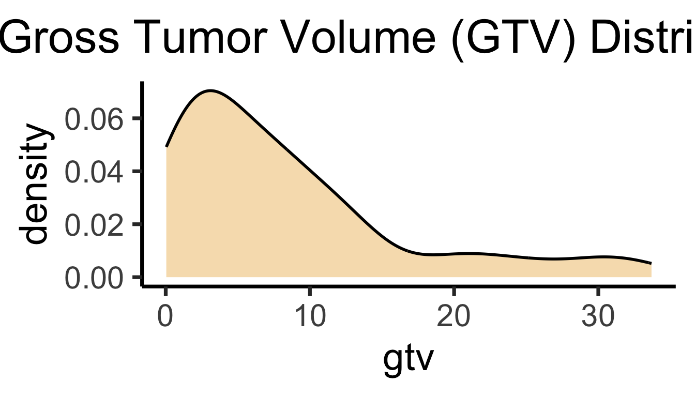

Code
source("../dsan-globals/_globals.r")
set.seed(5300)DSAN 5300: Statistical Learning
Spring 2025, Georgetown University
Today’s Planned Schedule:
| Start | End | Topic | |
|---|---|---|---|
| Lecture | 6:30pm | 7:00pm | Estimating Survival Curves → |
| 7:00pm | 7:20pm | Comparing Between Groups → | |
| 7:20pm | 8:00pm | Regression (Cox Proportional Hazard Model) → | |
| Break! | 8:00pm | 8:10pm | |
| 8:10pm | 9:00pm | Quiz 3 → |
source("../dsan-globals/_globals.r")
set.seed(5300)\[ \DeclareMathOperator*{\argmax}{argmax} \DeclareMathOperator*{\argmin}{argmin} \newcommand{\bigexp}[1]{\exp\mkern-4mu\left[ #1 \right]} \newcommand{\bigexpect}[1]{\mathbb{E}\mkern-4mu \left[ #1 \right]} \newcommand{\definedas}{\overset{\small\text{def}}{=}} \newcommand{\definedalign}{\overset{\phantom{\text{defn}}}{=}} \newcommand{\eqeventual}{\overset{\text{eventually}}{=}} \newcommand{\Err}{\text{Err}} \newcommand{\expect}[1]{\mathbb{E}[#1]} \newcommand{\expectsq}[1]{\mathbb{E}^2[#1]} \newcommand{\fw}[1]{\texttt{#1}} \newcommand{\given}{\mid} \newcommand{\green}[1]{\color{green}{#1}} \newcommand{\heads}{\outcome{heads}} \newcommand{\iid}{\overset{\text{\small{iid}}}{\sim}} \newcommand{\lik}{\mathcal{L}} \newcommand{\loglik}{\ell} \DeclareMathOperator*{\maximize}{maximize} \DeclareMathOperator*{\minimize}{minimize} \newcommand{\mle}{\textsf{ML}} \newcommand{\nimplies}{\;\not\!\!\!\!\implies} \newcommand{\orange}[1]{\color{orange}{#1}} \newcommand{\outcome}[1]{\textsf{#1}} \newcommand{\param}[1]{{\color{purple} #1}} \newcommand{\pgsamplespace}{\{\green{1},\green{2},\green{3},\purp{4},\purp{5},\purp{6}\}} \newcommand{\prob}[1]{P\left( #1 \right)} \newcommand{\purp}[1]{\color{purple}{#1}} \newcommand{\sign}{\text{Sign}} \newcommand{\spacecap}{\; \cap \;} \newcommand{\spacewedge}{\; \wedge \;} \newcommand{\tails}{\outcome{tails}} \newcommand{\Var}[1]{\text{Var}[#1]} \newcommand{\bigVar}[1]{\text{Var}\mkern-4mu \left[ #1 \right]} \]


| Patient (\(i\)) | Observed Outcome (\(Y_i\)) | Observed? (\(\delta_i\)) |
|---|---|---|
| 1 | 300 | 1 |
| 2 | 365 | 0 |
| 3 | 150 | 1 |
| 4 | 250 | 0 |
| Patient (\(i\)) | \(Y_i\) | \(\delta_i\) | Survival Time (\(T_i\)) | Censor Point (\(C_i\)) |
|---|---|---|---|---|
| 1 | 300 | 1 | 300 | NA |
| 2 | 365 | 0 | NA |
365 |
| 3 | 150 | 1 | 150 | NA |
| 4 | 250 | 0 | NA |
250 |
…If we’re testing effect of treatment, which column do we most care about?
| Patient (\(i\)) | \(Y_i\) | \(\delta_i\) | Survival Time (\(T_i\)) | Censor Point (\(C_i\)) |
|---|---|---|---|---|
| 1 | 300 | 1 | 300 | NA |
| 2 | 365 | 0 | NA |
365 |
| 3 | 150 | 1 | 150 | NA |
| 4 | 250 | 0 | NA |
250 |
…If we’re testing effect of treatment, \(T_i\) is what we care about!
\[ S_T(t) = \Pr(T > t) \]
\[ F_T(t) = \Pr(T \leq t) \]
Each death event \(d_k\) gives us info that survival probability lower by some amount
Break \(S(t)\) into sequence of stepwise changes at \(d_1, \ldots, d_K\):
\[ \begin{align*} S(d_k) = \Pr(T > d_k) &\overset{\mathclap{\small\text{LTP}}}{=} \Pr(T > d_k \mid T > d_{k-1})\overbrace{\Pr(T > d_{k-1})}^{S(d_{k-1})} \\ &\phantom{=} \; \; + \underbrace{\Pr(T > d_k \mid T \leq d_{k-1})}_{\text{Contradiction} \implies \Pr = 0}\Pr(T \leq d_{k-1}) \end{align*} \]
Gives us a recurrence relation:
\[ \begin{align*} S(d_k) &= \Pr(T > d_k \mid T > d_{k-1})S(d_{k-1}) \\ S(d_{k-1}) &= \Pr(T > d_{k-1} \mid T > d_{k-2})S(d_{k-2}) \\ %S(d_{k-2}) &= \Pr(T > d_{k-2} \mid T > d_{k-3})S(d_{k-3}) \\ &\vdots \\ S(d_2) &= \Pr(T > d_2 \mid T > d_1)S(d_1) \\ S(d_1) &= \Pr(T > d_1 \mid T > d_0)S(d_0) = \Pr(T > d_1) \end{align*} \]
Plug each eq into eq above it to derive:
\[ \begin{align*} S(d_k) = &\Pr(\underbrace{T > d_k}_{\mathclap{\small\text{Survives past }d_k}} \; \mid \; \underbrace{T > d_{k-1}}_{\mathclap{\small\text{Survives past }d_{k-1}}}) \\ &\times \Pr(\underbrace{T > d_{k-1}}_{\small\text{Survives past }d_{k-1}} \mid \underbrace{T > d_{k-2}}_{\small\text{Survives past }d_{k-2}}) \\ &\times \cdots \times \Pr(\underbrace{T > d_2}_{\mathclap{\small\text{Survives past }d_2}} \; \mid \; \underbrace{T > d_1}_{\mathclap{\small\text{Survives past }d_1}}) \\ &\times \Pr(\underbrace{T > d_1}_{\mathclap{\small\text{Survives past }d_1}}) \end{align*} \]
\[ \widehat{S}(d_k) = \prod_{j=1}^{k} \Bigl( \overbrace{ \frac{ r_j - q_j }{ \underbrace{r_j}_{\mathclap{\small\text{Num At Risk}}} } }^{\mathclap{\small\text{Num Survived}}} \Bigr) \]

Two death points: \(d_1 = 150, d_2 = 300\) (plus start point \(d_0 = 0\))
\[ \begin{align*} {\color{#e69f00}\widehat{S}(d_0)} &= \prod_{j=0}^{0}\left( \frac{r_k - q_k}{r_k} \right) = \left( \frac{4 - 0}{4} \right) = {\color{#e69f00}\boxed{1}} \\ {\color{#56b4e9}\widehat{S}(d_1)} &= \prod_{j=0}^{1}\left( \frac{r_k - q_k}{r_k} \right) = {\color{#e69f00}\boxed{1}} \cdot \left( \frac{r_1-q_1}{r_1} \right) \\ &= {\color{#e69f00}\boxed{1}} \cdot \left( \frac{4 - 1}{4} \right) = {\color{#56B4E9}\boxed{\frac{3}{4}}} \\ {\color{#009e73}\widehat{S}(d_2)} &= \prod_{j=0}^{2}\left( \frac{r_k - q_k}{r_k} \right) = {\color{#e69f00}\boxed{1}} \cdot {\color{#56b4e9}\boxed{\frac{3}{4}}} \cdot \left( \frac{r_2 - q_2}{r_2} \right) \\ &= {\color{#e69f00}\boxed{1}} \cdot {\color{#56b4e9}\boxed{\frac{3}{4}}} \cdot \left( \frac{2-1}{2} \right) = \frac{3}{4}\cdot \frac{1}{2} = {\color{#009e73}\boxed{\frac{3}{8}}} \end{align*} \]
library(tidyverse) |> suppressPackageStartupMessages()
library(survival) |> suppressPackageStartupMessages()
library(latex2exp) |> suppressPackageStartupMessages()
surv_df <- tribble(
~id, ~y, ~delta,
1, 300, 1,
2, 365, 0,
3, 150, 1,
4, 250, 0
)
surv_obj <- Surv(surv_df$y, event = surv_df$delta)
surv_model <- survfit(surv_obj ~ 1)
# Plot options
par(mar=c(2,4,1.25,1.0)) # bltr
y_label <- TeX("$\\Pr(T > t)$")
plot(
surv_model,
ylab=y_label,
lwd=1,
main="Survival Curve for 4-Patient Example"
) # conf.int=FALSE
# Add colors
# lines(c(0, 150), c(1.0, 1.0), type='l', col='#E69F00', lwd=2)
rect(xleft = 0, xright = 150, ybottom = 0, ytop = 1.0, col="#E69F0040", lwd=0)
# lines(c(150, 300), c(3/4, 3/4), type='l', col='#56B4E9', lwd=2)
rect(xleft = 150, xright = 300, ybottom = 0, ytop = 1.0, col="#56B4E940", lwd=0)
# lines(c(300, 365), c(3/8, 3/8), type='l', col='#009E73', lwd=2)
rect(xleft = 300, xright = 365, ybottom = 0, ytop = 1.0, col="#009E7340", lwd=0)

| Group 1 | Group 2 | Total | |
|---|---|---|---|
| Died | \(q_{1k}\) | \(q_{2k}\) | \(q_k\) |
| Survived | \(r_{1k} - q_{1k}\) | \(r_{2k} - q_{2k}\) | \(r_k - q_k\) |
| Total | \(r_{1k}\) | \(r_{2k}\) | \(r_k\) |
\[ \mathbb{E}[ \underbrace{q_{1k}}_{\mathclap{\small\substack{\text{Group 1 deaths} \\ \text{at }d_k}}} ] = \overbrace{r_{1k}}^{\mathclap{\small\substack{\text{At risk in} \\[0.2em] \text{Group 1}}}} \cdot \underbrace{\left( \frac{q_k}{r_k} \right)}_{\mathclap{\small\text{Overall death rate at }d_k}} \]
\[ \begin{align*} W &= \frac{X - \mathbb{E}[X]}{\sqrt{\text{Var}[X]}} = \frac{ \sum_{k=1}^{K}q_{1k} - \mathbb{E}\mkern-3mu\left[ \sum_{k=1}^{K}q_{1k} \right] }{ \sqrt{\text{Var}\mkern-3mu\left[ \sum_{k=1}^{K}q_{1k} \right]} } = \frac{ \sum_{k=1}^{K} \left( q_{1k} - \mathbb{E}[q_{1k}] \right) }{ \sqrt{\text{Var}\mkern-3mu\left[ \sum_{k=1}^{K}q_{1k} \right]} } \\ &= \frac{ \sum_{k=1}^{K}\left( q_{1k} - r_{1k}\cdot \frac{q_k}{r_k} \right) }{ \sqrt{\text{Var}\mkern-3mu\left[ \sum_{k=1}^{K}q_{1k} \right]} } \underset{\small\text{Ex 11.7}}{\overset{\small\text{ISLR}}{=}} \frac{ \sum_{k=1}^{K}\left( q_{1k} - r_{1k}\cdot \frac{q_k}{r_k} \right) }{ \sqrt{\sum_{k=1}^{K} \frac{ q_k(r_{1k}/r_k)(1 - r_{1k}/r_k)(r_k - q_k) }{ r_k - 1 }} } \end{align*} \]
\[ h(t) \definedas \lim_{\Delta t \rightarrow 0}\frac{\Pr(t < T \leq t + \Delta t)}{\Delta t} \]
\[ \underbrace{h(t)}_{\small\text{pdf of }T_{>t}} = \frac{\overbrace{f(t)}^{\small\text{pdf of }T}}{\underbrace{S(t)}_{\small \Pr(T > t)}} \]
\[ h(t \mid x_i) = h_0(t)\exp\left[ \sum_{j=1}^{p}\beta_j x_{ij} \right] \iff \underbrace{\log[h(t \mid x_i)]}_{\hbar(t \mid x_i)} = \underbrace{\log[h_0(t)]}_{\hbar_0(t)} + \sum_{j=1}^{p}\beta_j x_{ij} \]
Basically: Features \(X_{j}\) shift [log] baseline hazard function \(\hbar_0(t)\) up and down by constant amounts, via multiplication by \(e^{\beta_j}\)

\[ \prod_{i : \, \delta_i = 1} \; \frac{ {\color{red}\cancel{\color{black}h_0(t)}}\exp\mkern-3mu\left[ \sum_{j=1}^{p} \beta_j x_{ij} \right] }{ {\displaystyle \sum\limits_{\mathclap{i': \, y_{i'} \geq y_i}}} {\color{red}\cancel{\color{black}h_0(t)}}\exp\mkern-3mu\left[ \sum_{j=1}^{p} \beta_j x_{i'j} \right] } = \prod_{i : \, \delta_i = 1} \; \frac{ \exp\mkern-3mu\left[ \sum_{j=1}^{p} \beta_j x_{ij} \right] }{ {\displaystyle \sum\limits_{\mathclap{i': \, y_{i'} \geq y_i}}} \exp\mkern-3mu\left[ \sum_{j=1}^{p} \beta_j x_{i'j} \right] } \]
survival library in R, very similar syntax to lm(), glm(), etc.!library(survival) |> suppressPackageStartupMessages()
library(ISLR2) |> suppressPackageStartupMessages()
bc_df <- BrainCancer |> filter(diagnosis != "Other")
bc_df$diagnosis = factor(bc_df$diagnosis)
bc_df$sex <- factor(substr(bc_df$sex, 1, 1))
bc_df$loc <- factor(substr(bc_df$loc, 1, 5))
options(width=130)
summary(bc_df) sex diagnosis loc ki gtv stereo status time
F:39 Meningioma:42 Infra:10 Min. : 40.00 Min. : 0.040 SRS:19 Min. :0.000 Min. : 0.07
M:34 LG glioma : 9 Supra:63 1st Qu.: 80.00 1st Qu.: 2.500 SRT:54 1st Qu.:0.000 1st Qu.: 9.77
HG glioma :22 Median : 80.00 Median : 6.480 Median :0.000 Median :26.46
Mean : 81.37 Mean : 8.297 Mean :0.411 Mean :27.83
3rd Qu.: 90.00 3rd Qu.:11.380 3rd Qu.:1.000 3rd Qu.:41.44
Max. :100.00 Max. :33.690 Max. :1.000 Max. :82.56 bc_df |> head(5)| sex | diagnosis | loc | ki | gtv | stereo | status | time |
|---|---|---|---|---|---|---|---|
| F | Meningioma | Infra | 90 | 6.11 | SRS | 0 | 57.64 |
| M | HG glioma | Supra | 90 | 19.35 | SRT | 1 | 8.98 |
| F | Meningioma | Infra | 70 | 7.95 | SRS | 0 | 26.46 |
| F | LG glioma | Supra | 80 | 7.61 | SRT | 1 | 47.80 |
| M | HG glioma | Supra | 90 | 5.06 | SRT | 1 | 6.30 |
coxph() Estimationlibrary(broom) |> suppressPackageStartupMessages()
full_cox_model <- coxph(
Surv(time, status) ~ sex + diagnosis + loc + ki + gtv + stereo,
data=bc_df
)
broom::tidy(full_cox_model) |> mutate_if(is.numeric, round, 3)| term | estimate | std.error | statistic | p.value |
|---|---|---|---|---|
| sexM | 0.456 | 0.396 | 1.154 | 0.249 |
| diagnosisLG glioma | 0.864 | 0.641 | 1.347 | 0.178 |
| diagnosisHG glioma | 2.116 | 0.470 | 4.504 | 0.000 |
| locSupra | 1.482 | 1.105 | 1.342 | 0.180 |
| ki | -0.048 | 0.020 | -2.406 | 0.016 |
| gtv | 0.036 | 0.026 | 1.361 | 0.173 |
| stereoSRT | -0.475 | 0.591 | -0.803 | 0.422 |
ki): 1-unit increase associated with reduction of hazard to \(e^{-0.055} \approx 94.65\)% of previous value [0-100 scale of self-functioning abilities]library(extrafont) |> suppressPackageStartupMessages()
par(cex=1.2, family="CMU Sans Serif")
diag_levels <- c("Meningioma", "LG glioma", "HG glioma")
diag_df <- tibble(
diagnosis = diag_levels,
sex = rep("F", 3),
loc = rep("Supra", 3),
ki = rep(mean(bc_df$ki), 3),
gtv = rep(mean(bc_df$gtv), 3),
stereo = rep("SRT", 3)
)
survplots <- survfit(full_cox_model, newdata = diag_df)
plot(
survplots,
main = "Survival Curves by Diagnosis",
xlab = "Months", ylab = "Survival Probability",
col = cb_palette, lwd=1.5
)
legend(
"bottomleft",
diag_levels,
col = cb_palette, lty = 1, lwd=1.5
)
ki, gtv Valki \(\in [0, 100]\), gtv \(\in (0, \infty)\)bc_df |> ggplot(aes(x=ki)) +
geom_density(
linewidth=g_linewidth,
fill=cb_palette[1], alpha=0.333
) +
theme_dsan(base_size=28) +
labs(title = "Karnofsky Index Distribution")
bc_df |> ggplot(aes(x=gtv)) +
geom_density(
linewidth=g_linewidth,
fill=cb_palette[1], alpha=0.333
) +
theme_dsan(base_size=28) +
labs(title = "Gross Tumor Volume (GTV) Distribution")
ki_terciles <- quantile(bc_df$ki, c(1/3, 2/3))
bc_df <- bc_df |> mutate(
tercile = ifelse(ki < ki_terciles[1], 1, ifelse(ki < ki_terciles[2], 2, 3))
)
(terc_df <- bc_df |>
group_by(tercile) |>
summarize(med_ki=median(ki)))| tercile | med_ki |
|---|---|
| 1 | 70 |
| 2 | 80 |
| 3 | 90 |
library(latex2exp) |> suppressPackageStartupMessages()
ki_df <- tibble(
diagnosis = rep("Meningioma", 3),
sex = rep("F", 3),
loc = rep("Supra", 3),
ki = terc_df$med_ki,
gtv = rep(mean(bc_df$gtv), 3),
stereo = rep("SRT", 3)
)
ki_plots <- survfit(full_cox_model, newdata = ki_df)
par(
mar=c(4.0,4.0,1.2,0.5),
cex=1.2,
family="CMU Sans Serif"
) # bltr
plot(
ki_plots,
main = "Survival Curves by KI Tercile",
xlab = "Months",
ylab = TeX("$\\Pr(T > t)$"),
lwd = 1,
col = cb_palette
)
ki_labs <- c(
TeX("$h( t \\, | \\, KI = 70 )$"),
TeX("$h( t \\, | \\, KI = 80 )$"),
TeX("$h( t \\, | \\, KI = 90 )$")
)
legend(
"bottomleft",
ki_labs, lwd=1,
col = cb_palette, lty = 1, cex=0.8
)